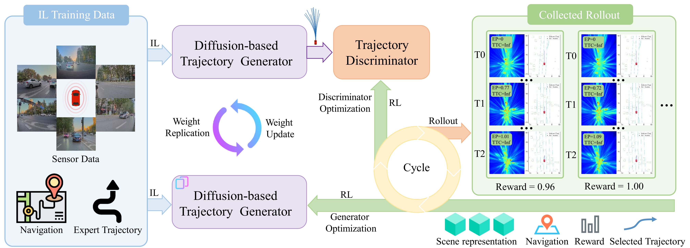

RAD-2: Scaling Reinforcement Learning in
a Generator-Discriminator Framework
Abstract
High-level autonomous driving requires motion planners capable of modeling multimodal future uncertainties while remaining robust in closed-loop interactions.
Although diffusion-based planners are effective at modeling complex trajectory distributions, they often suffer from stochastic instabilities and the lack of
corrective negative feedback when trained purely with imitation learning. To address these issues, we propose RAD-2, a unified generator-discriminator
framework for closed-loop planning. Specifically, a diffusion-based generator is used to produce diverse trajectory candidates, while an RL-optimized discriminator
reranks these candidates according to their long-term driving quality. This decoupled design avoids directly applying sparse scalar rewards to the full high-dimensional
trajectory space, thereby improving optimization stability. To further enhance reinforcement learning, we introduce Temporally Consistent Group Relative
Policy Optimization, which exploits temporal coherence to alleviate the credit assignment problem.
In addition, we propose On-policy Generator Optimization, which converts closed-loop feedback into structured longitudinal optimization signals and progressively shifts
the generator toward high-reward trajectory manifolds. To support efficient large-scale training, we introduce BEV-Warp, a high-throughput simulation environment that
performs closed-loop evaluation directly in Bird's-Eye View feature space via spatial warping. RAD-2 reduces the collision rate by 56% compared with strong
diffusion-based planners. Real-world deployment further demonstrates improved perceived safety and driving smoothness in complex urban traffic.
Framework

Closed-loop Evaluation in Real-World
Closed-loop Evaluation in BEV-Warp Environment
Top: IL Baseline | Bottom: RAD-2
Video Content Explanation:
- 1st column: Reference Input (front-view camera visualization only; full input is multi-dimensional);
- 2nd column: Warped BEV Feature Input (dimensionally reduced for visualization);
- 3rd column: Corresponding perception & planning output;
IL Baseline
RAD-2
IL Baseline
RAD-2
IL Baseline
RAD-2
IL Baseline
RAD-2
IL Baseline
RAD-2
IL Baseline
RAD-2
IL Baseline
RAD-2
IL Baseline
RAD-2
IL Baseline
RAD-2
IL Baseline
RAD-2
BibTeX
@article{RAD,
title={RAD: Training an End-to-End Driving Policy via Large-Scale 3DGS-based Reinforcement Learning},
author={Gao, Hao and Chen, Shaoyu and Jiang, Bo and Liao, Bencheng and Shi, Yiang and Guo, Xiaoyang and Pu, Yuechuan and Yin, Haoran and Li, Xiangyu and Zhang, Xinbang and Zhang, Ying and Liu, Wenyu and Zhang, Qian and Wang, Xinggang},
journal={arXiv preprint arXiv:2502.13144},
year={2025}
}